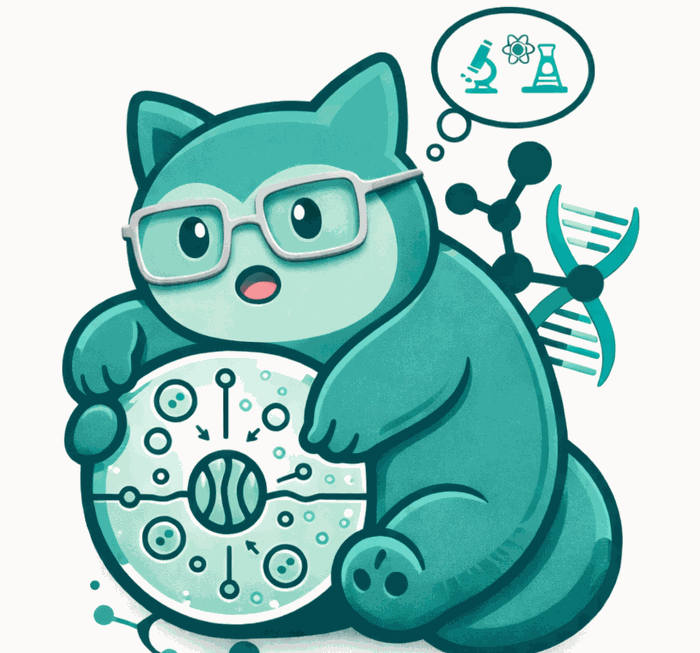
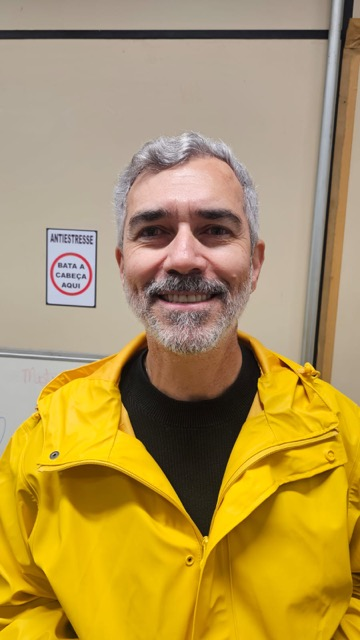
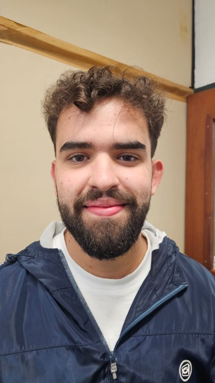
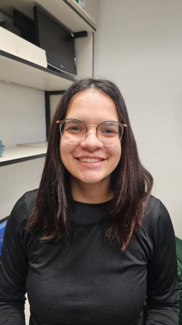
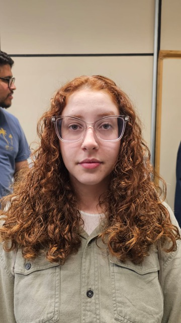
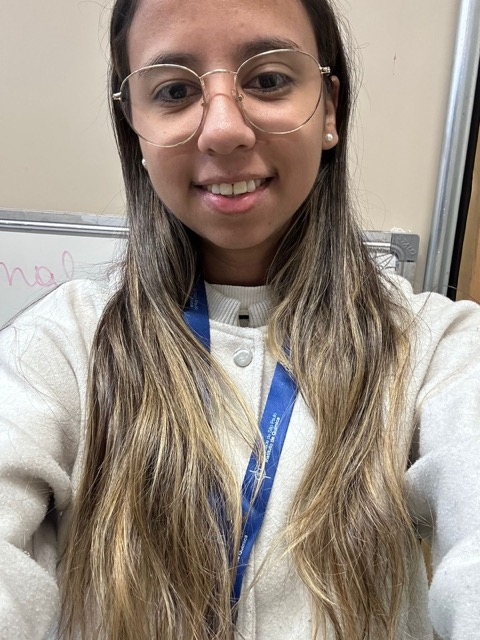

O Laboratório Integrativo de Bioprospecção de Novas Moléculas desenvolve inibidores e degradadores da PCSK9 e outros alvos do metabolismo lipídico, unindo modelagem computacional, síntese e validação experimental.

O LIBNM — Laboratório Integrativo de Bioprospecção de Novas Moléculas — é liderado pelo Prof. Dr. Glaucio Monteiro Ferreira no Instituto de Química da Universidade de São Paulo.
Nosso foco central é a PCSK9, protease que controla a reciclagem do receptor de LDL e cujo ganho de função eleva o colesterol plasmático — mecanismo-chave da hipercolesterolemia familial. Buscamos alternativas às estatinas (limitadas por efeitos musculares) e aos anticorpos injetáveis de alto custo.
Nossa abordagem é integrativa: da modelagem e triagem virtual à síntese de moléculas — incluindo plataformas LYTAC para degradação direcionada — e à validação in vitro, organizadas na plataforma MMDSP (Molecular Modeling Drug Screening Platform).
Glaucio é bacharel em Farmácia pela UFES, doutor em Ciências Farmacêuticas (Química Medicinal) pela USP (2015–2018), com pós-doutorados na FCF-USP, no Instituto Dante Pazzanese de Cardiologia e na Universität Tübingen (Alemanha). Hoje lidera o LIBNM como Pesquisador Associado com bolsa FAPESP Jovem Pesquisador (processo 2023/15933-4, 2026–2030).
Quatro frentes que se retroalimentam dentro de um único ciclo de descoberta de fármacos.
SBVS de grandes bibliotecas para identificar compostos com complementaridade à PCSK9, seguido de avaliação de eficácia, toxicidade e ensaios de captação de LDL.
Síntese de plataformas LYTAC para degradação da PCSK9 via ASGPR, incluindo tioglicosídeos por sais de Bunte e exploração da variabilidade de linkers.
Modelagem conformacional avançada da PCSK9 e da Apolipoproteína B100, avaliando o impacto de variantes não-sinônimas sobre estrutura e função.
Simulações aplicadas a alvos além do metabolismo lipídico — proteases do SARS-CoV-2, CPT1 e Sir2 de T. cruzi — sustentando projetos de CADD.
Um grupo que reúne graduandos, mestrandos e doutorandos em torno do planejamento e da validação de novos fármacos.
Planejamento de fármacos assistido por computador, modelagem e dinâmica molecular.

Professor Titular do IQ-USP; química orgânica sintética, rotas para plataformas LYTAC e organotelúrio.
Buscamos alunos de IC, mestrado e doutorado com interesse em CADD e síntese.
Avaliação funcional e transcriptômica de derivados feniletilamina direcionados à PCSK9 para o tratamento de doenças cardiovasculares.

Avaliação estrutural experimental de sondas químicas para validação do sítio de ligação catalítico.
Avaliação in vitro de atividade, farmacocinética e toxicidade de inibidores de PCSK9.

Through the lens of proteasomal degradation: PROTAC bifuncional como nova oportunidade terapêutica para inibição da PCSK9 e homeostase do colesterol.
Plataformas LYTAC para degradação de PCSK9 via ASGPR: síntese de tioglicosídeos via sais de Bunte, variabilidade de linkers e inibidores da PCSK9.
Desvendando o impacto da Hipercolesterolemia Familiar através da modelagem computacional avançada da Apolipoproteína B100 e suas variantes.

Síntese da N-{2-[3,5-bis(butiltelanil)fenil]etil}acetamida via acetilação e substituição nucleofílica aromática com reagente de Grignard organotelurídico.

Avaliação da captação de LDL por potenciais inibidores da PCSK9.
Síntese de tioglicosídeos via sais de Bunte: rota modular para plataformas de degradação proteica direcionada de alvos intracelulares.
Uma amostra representativa do trabalho do grupo. Lista completa sob solicitação.